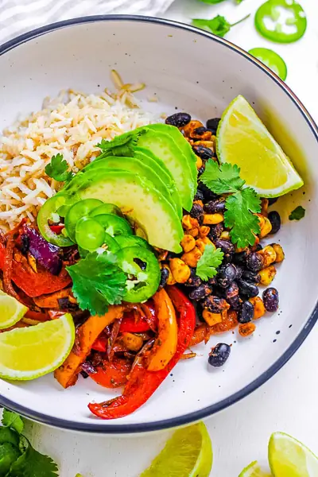

Vegetarian Fajita Bowl

Ingredients
- 1 tbsp smoked paprika
- 1 tsp coriander, ground
- 1 tsp cumin, ground
- ¼ tsp cayenne pepper
- ½ tsp garlic powder
- ½ tsp onion powder
- ½ tsp oregano, dried
- ½ tsp salt
- 2 red bell peppers, sliced
- 1 yellow bell pepper, sliced
- 1 red onion
- 1 tbsp olive oil
- 1 cup frozen corn kernels
- 1 cup brown rice, cooked
- 1 tin black beans, drained and washed
- 1 avocado
- 2 limes
- ½ bunch fresh cilantro
- 2 jalapenos, sliced
Steps
- Preheat the oven to 350 degrees F / 180 C.
- Add all seasoning ingredients into a small mixing bowl and mix together.
- Add the sliced bell peppers and onion into a mixing bowl along with the oil and half of the seasoning mixture, stir to coat.
- Spread the coated vegetables onto a baking tray and cook in the oven for 10-15 minutes.
- While the bell peppers are cooking, heat the frozen corn and black beans in a small skillet until hot, sprinkle the remaining seasoning and stir to coat.
- Heat the cooked rice and evenly divide the rice and the corn mixture between 3-4 bowls.
- Top with the cooked bell peppers, sliced avocado, lime wedges, fresh cilantro, and sliced jalapeno.
Recipe by Anjali Shah · The Picky Eater, from The Picky Eater. Saved here for personal use; the original has the full notes, tips and photos. Open original